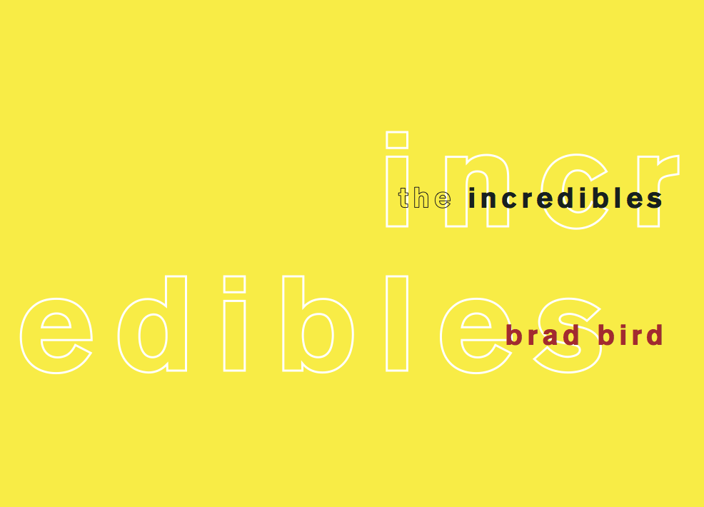

24 Logotypes
Spring 2017
Typography book about popular typefaces.
This book was also created for Typography 1, however we were given much more freedom with this assignment. I chose to work on the Incredibles as it is one of my favorite movies of all times. I used a yellow line on the hinge to designate a new scene, indentations to represent which character is speaking, and different styles of text to separate dialogue, character names, stage direction, etc.
The grid was designed to have three levels of character dialogue along with other elements that lay on the grid. I worked in small caps, italics, two fonts, and dashes to create a screenplay that looked perfected, but also easier to read.

Cover, Adobe InDesign
For the cover I wanted to try and tell a little bit about the incredibles with just type. At first, I played with different letters representing different powers (ie. strected, strong), but that didn't really get me to a design that I was happy with. The cover I ended up sticking to represents both the split in the family that occurs and the idea of identity and masks. The word 'INCREDIBLES' is hard to see against the lighter yellow, representing the super-hero part that the Parr family hides. Having the word split showcases the inner turmoil that takes place in the story.
Below is a PDF version of my screenplay...